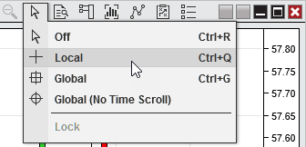
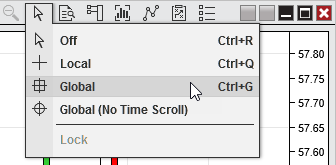
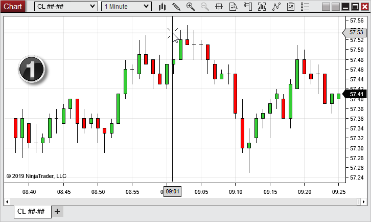
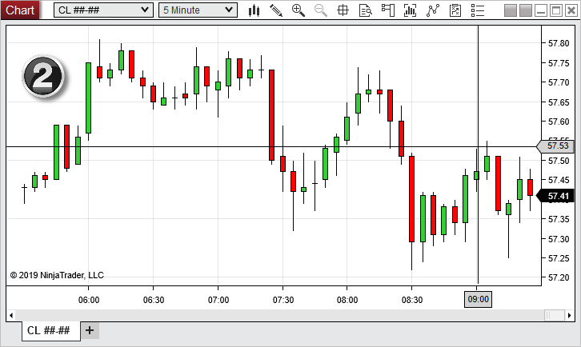

|
<< Click to Display Table of Contents >> Cross Hair |


|
Cross Hair
|
<< Click to Display Table of Contents >> Cross Hair |
|
The Cross Hair changes the cursor to a pair of intersecting vertical and horizontal lines, allowing you to use your cursor to pinpoint specific coordinates on your chart. The lines displayed by the Cross Hair extend to the X (time) axis and Y (price) axis of the chart, and include markers in both axes to display the precise position of the cursor. The Global Cross Hair allows you to link Cross Hairs from multiple chart windows. This means that as you move the Global Cross Hair in one chart, all other Global Cross Hairs will move together by automatically staying at the same time and price.
Enabling the Cross Hair There are multiple ways to enable the Cross Hair within a chart window:

•Left mouse click on the Cursor icon in the chart toolbar and select the Local menu item. •Right mouse click within the chart and select the Crosshair menu, then select the Local menu item. •Use the default CTRL +Q Hot Key
The cursor icon within the chart toolbar will change to a cross hair icon, letting you know that Cross Hair is enabled on the chart. |
 How to enable the Global Cross Hair
How to enable the Global Cross Hair
Enabling the Global Cross Hair Just like the Cross Hair, there are multiple ways to enable the Global Cross Hair within a chart window:

•Left mouse click on the Cursor icon in the chart toolbar and select the Global menu item. •Right mouse click within the chart and select the Crosshair menu, then select the Global menu item. •Use the default CTRL +G Hot Key
The cursor icon within the chart toolbar will change to a cross hair icon with a square border, letting you know that Global Cross Hair is enabled on the chart.
|
 How to use the Global Cross Hair
How to use the Global Cross Hair
Using the Global Cross HairThe Global Cross Hair must be enabled on more than one chart in order to take full advantage of its functionality.
The images below shows two CL charts, a 1 Minute and 5 Minute, both with Global Cross Hair enabled. Notice the time and price cross hair values in each chart are the same. When the cursor is moved in any chart with Global Cross Hair enabled, cross hairs in all other charts with Global Cross Hair enabled will move as well, to stay at the same time and price coordinates.

1. The cursor is active on the 1-minute chart, and the time and price axis values corresponding to the position of the Global Cross Hair are displayed.

2. The position of the Global Cross Hair on the 5-minute chart automatically updates based on the position of the cursor in the 1-minute chart. |
Cross Hair Options•You can optionally lock the crosshair in a specific point in time. To lock the time (vertical) line of the Cross Hair or Global Cross Hair, while retaining the ability to move the horizontal line, you can enable the Locked property within the Crosshair section of the Chart Properties window, or use the default CTRL +L Hot Key. When using the Global Cross Hair, locking will apply to all charts with Global Cross Hair enabled.
•Additional options related to the Cross Hair or Global Cross Hair can be set in the Chart Properties window. The following properties can be set:
|